The Ashgrove Garland Dancers of Asheville, North Carolina perform garland, stave, ribbon, and jig dances from several regions of England. We practice during the winter months and present our dances on or around May Day. We dance throughout the spring and summer during evening tours and for special events. Following a late summer break, we practice during autumn and display our dances during the year end holiday season. We often tour with Asheville Morris and together present English country dances.
Our group is open to women as dancers and men or women as musicians. All dances are taught. Music instruction provided to experienced musicians. Interest in traditional music and singing is welcomed.
We meet every Monday to practice or perform.
We perform solo and often tour with other Morris groups in the Asheville area and the Morris teams at the John C. Campbell Folk School. We occasionally perform with other dance groups in the US and abroad.
To contact us: juiceofbarley@hotmail.com 828-545-5510
 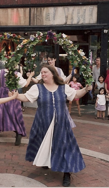
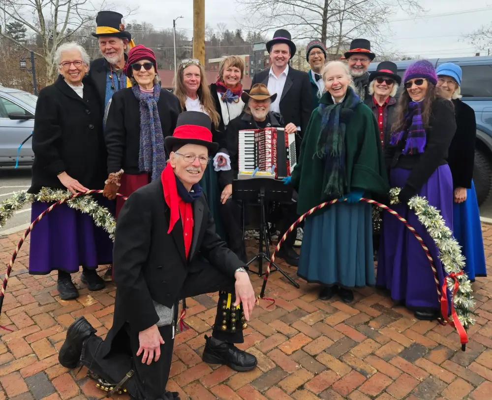
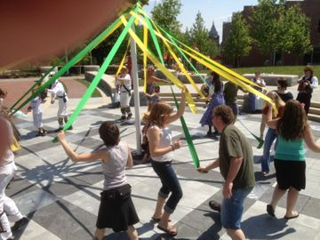
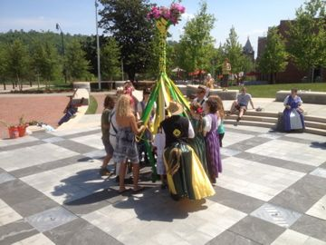
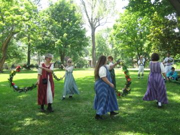
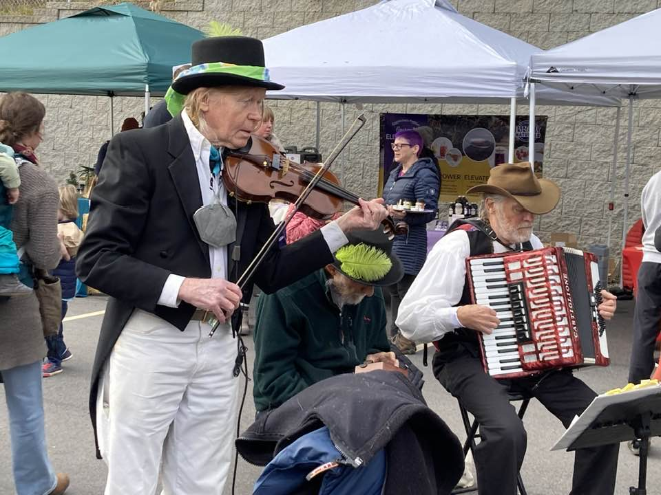
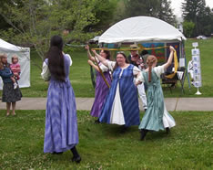
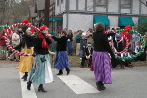
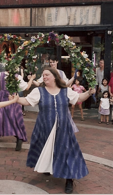
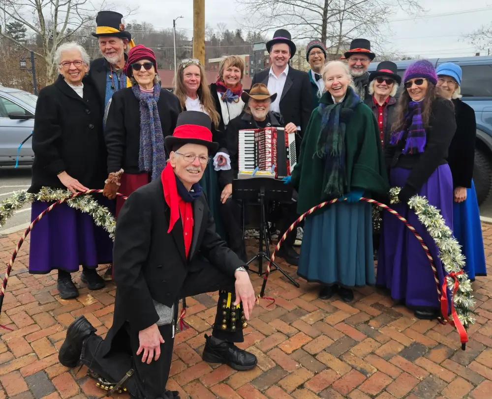
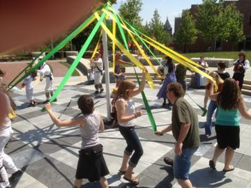
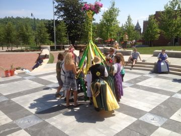
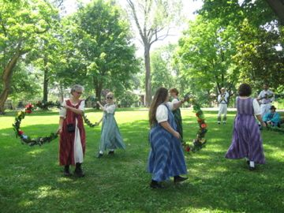
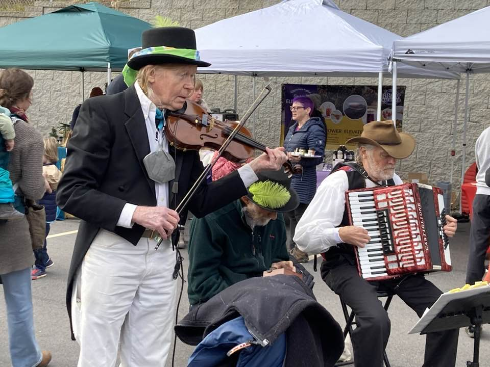
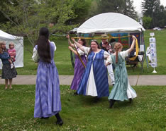
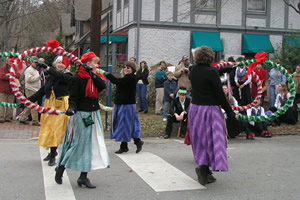

 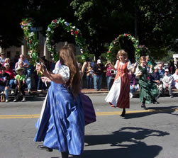
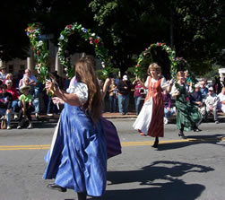
 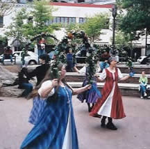
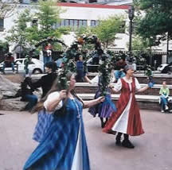
 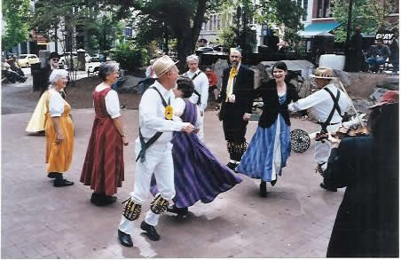
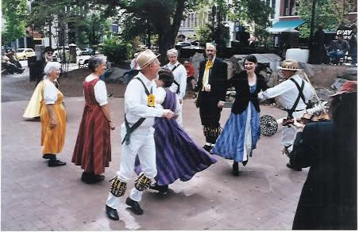
 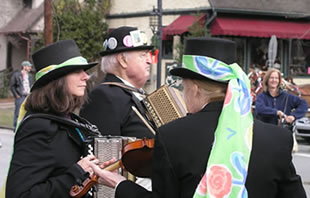
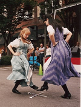
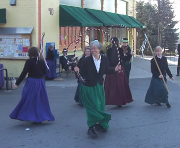
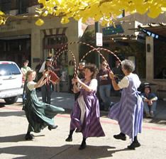
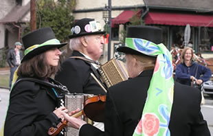
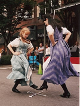
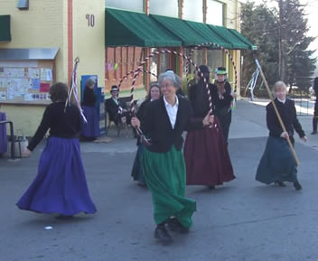
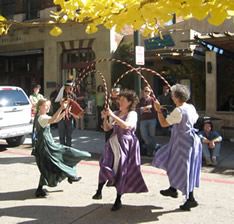
 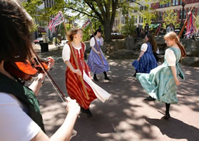
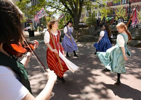
 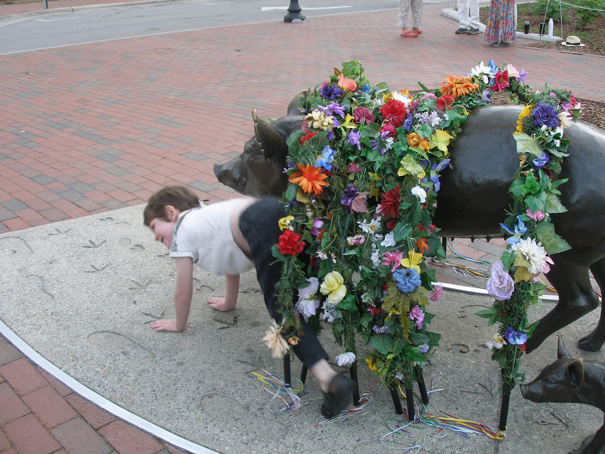
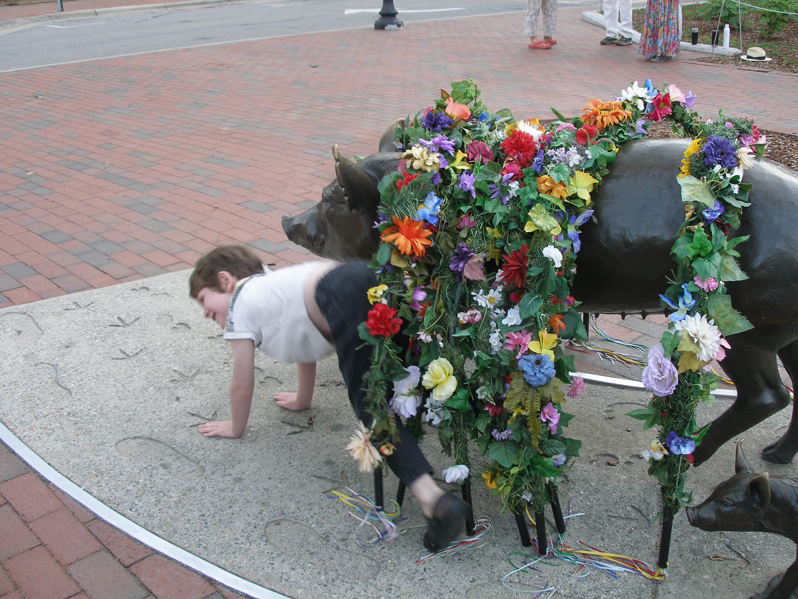